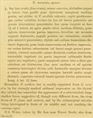

Click on images to enlarge
{kind=link}

Paropsis foveata, description
Name
Trachymela foveata (Blackburn, 1896)
Type specimen
Not examined.
Original description
[Original description shown in figure, translated from Latin using ChatGPT, 03/2026]
♀. Rather broadly ovate, less convex, the greatest height (seen from the side) placed a little behind the middle of the elytra; rather shining; coloured as in P. sordida; head and prothorax finely but rather densely punctulate (at the sides with some larger punctures intermixed); prothorax wider than long in the ratio about 2¼ : 1, expanded from the apex to somewhat beyond the middle, behind the apex transversely slightly impressed, rather densely but more finely (at the sides more coarsely) punctulate; sides rather rounded, narrowly flattened; posterior angles fairly rounded; scutellum finely rugulose.
Elytra with a slight depression below the humeral callus, behind the base with a strong transverse impression, rather densely and strongly somewhat in rows (more so at the sides, less so behind) punctate; furnished with some rather large black verrucae (these somewhat arranged in rows, but not very distinctly); interstices rugulose; marginal portion rather narrow, distinctly separated from the disc (by a groove); humeral callus with its inner margin nearer to the lateral margin than to the suture; basal ventral segment sparsely and finely punctulate.
Length 4 lines (~8.5 mm), width 2⅘ lines (~5.9 mm).
Notes
Blackburn (1896) deals with P. foveata as part of his 'subgroup ii' (i.e., those species without "strongly marked characters", whose greatest height is not or scarcely in front of the middle of the elytral margin and whose elytra are depressed under the humeral callus). Within that group, he characterises it as:
(1) inner edge of humeral callus distinctly nearer to lateral margin of elytra than to suture;
(2) sides of prothorax more or less explanate;
(3) elytra not having well-defined continuous costae;
(4) puncturation of the elytra not particularly fine;
(5) upper surface of elytra in general, or at least the verrucae, black or nearly so;
(6) explanate margins of prothorax relatively narrow [<1/3 of width of discal part];
(7) median verrucae of prothorax scarcely defined;
(8) prothorax not coloured as in piceola [not dark in middle, with contrasting pallid sides];
(9) elytral verrucae much less distinct, confused (especially in front) with interstitial rugulosity;
(10) puncturation of prothorax not close and asperate; form not strongly convex;
(11) postbasal impression of elytra well defined.
Withouth seeing the type, it is difficult to pin this one down to one species. From its size and type locality, and the well-defined elytral post-basal depression, it is likely in the group that includes Ta21, Ta170 and Ta171. The presence of fairly large verrucae, for the most part not in clearly-defined rows, points to Ta171 - a species that would be definitely present at Forest Reefs, but not Inverell.
References
Blackburn, T. 1896, "Revision of the genus Paropsis. Part I", Proceedings of the Linnean Society of New South Wales, vol. 21, no. 4, 637-693 (page 662).
Copyright © 2026. All rights reserved.